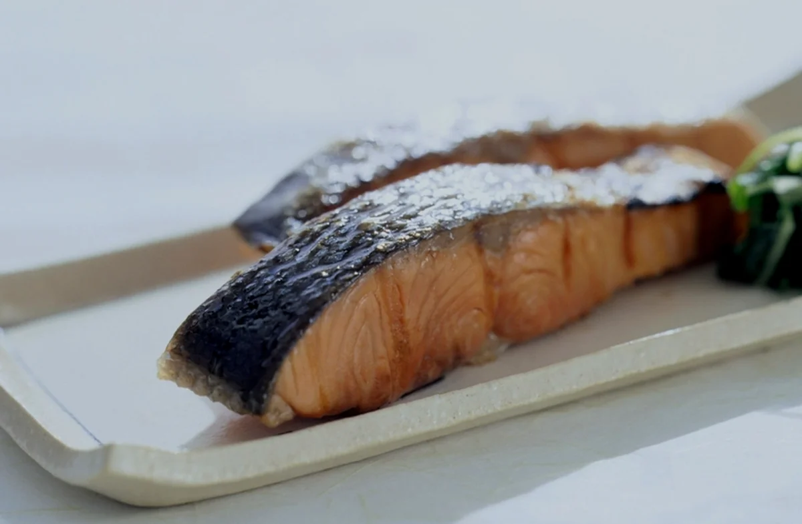

今日の魚は、
黒板を見てください。
朝に入ったものをそのまま焼きます。鮭の日もあれば、さばの日もあります。売り切れたらそこで終わりです。
店のこと
- 昼
- 11:00 – 14:00
- 夜
- 17:30 – 22:00
- 休み
- 日曜、第3月曜
- 席
- カウンター8席、小上がり2卓
- 支払い
- 現金、PayPay
- 住所
- 名古屋市西区○○町1-2-3
- 最寄り
- 地下鉄鶴舞線 浄心駅から徒歩6分
- 駐車場
- 店の裏に2台
はじめての方へ
暖簾をくぐったら、空いている席にどうぞ。案内はしていません。注文は席で、お会計は帰りにレジで。
昼の12時から13時は混みます。ひとりならカウンターが空いていることが多いです。
夜は予約なしで大丈夫ですが、四人以上のときは電話をいただけると助かります。